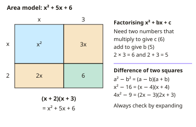

GCSE Maths · Topic 7
Advanced algebra
Advanced algebra takes your algebra skills to the level needed for the top grades.
We will factorise harder quadratics, use the difference of two squares, and solve quadratic inequalities.
Then we shade regions for inequalities, solve simultaneous equations where one is a quadratic, and find nth terms of quadratic and geometric sequences.
- 5 subtopics
- 138 questions
- Free: 7.1 notes and 7 questions
In this topic
- 7.1Factorising quadratics and the difference of two squaresFree below · 13 questions
- 7.2Quadratic inequalitiesOpen in Full Marks · 16 questions
- 7.3Graphical inequalities and regionsOpen in Full Marks · 31 questions
- 7.4Simultaneous equations with a quadratic (linear and non-linear)Open in Full Marks · 28 questions
- 7.5Quadratic, geometric and special sequences (nth term)Open in Full Marks · 50 questions
7.1 · Free notes
Factorising quadratics and the difference of two squares

Key points
- A quadratic expression has the form ax² + bx + c (a ≠ 0). Factorising writes it as a product of brackets, which is the reverse of expanding.
- To factorise x² + bx + c, find two numbers that multiply to c and add to b. For example x² + 7x + 12 = (x + 3)(x + 4), since 3 × 4 = 12 and 3 + 4 = 7.
- Check the signs. If c is positive, both numbers have the same sign as b. If c is negative, the numbers have different signs, and the larger one takes the sign of b.
- Always take out a common factor first. 3x² + 6x = 3x(x + 2) and 2x² − 18 = 2(x − 3)(x + 3). "Factorise fully" means no further factors remain.
- The difference of two squares is a² − b² = (a − b)(a + b). For example x² − 49 = (x − 7)(x + 7). It works only for one square minus another square.
- x² + 49 (a sum of squares) cannot be factorised using real numbers. There is no middle term, so DOTS does not apply.
- With coefficients, 4x² − 25 = (2x − 5)(2x + 5) and 9x² − 16y² = (3x − 4y)(3x + 4y). Take the square root of each term, including its coefficient.
- For ax² + bx + c with a ≠ 1, multiply a × c and find two numbers that multiply to ac and add to b. Split the middle term and factorise in pairs: 2x² + 7x + 3 = 2x² + 6x + x + 3 = (2x + 1)(x + 3).
- Check by expanding your brackets (for example with FOIL or a grid). You must get the original expression back.
- To solve a quadratic equation by factorising, first rearrange to = 0. Factorise, then set each bracket equal to 0. (x − 3)(x + 4) = 0 gives x = 3 or x = −4. Note the sign change.
- Use DOTS for quick arithmetic: 101² − 99² = (101 − 99)(101 + 99) = 2 × 200 = 400. You can also use factorising to simplify algebraic fractions, for example (x² − 9)/(x² + x − 6) = (x − 3)/(x − 2).
In more detail
- Worked simple quadratic: x² + 2x − 15 = (x + 5)(x − 3), because 5 × (−3) = −15 and 5 + (−3) = 2.
- Worked a ≠ 1: 6x² + 7x − 3: ac = −18, use 9 and −2 → 6x² + 9x − 2x − 3 = 3x(2x + 3) − 1(2x + 3) = (3x − 1)(2x + 3).
- Worked DOTS: 9x² − 16y² = (3x − 4y)(3x + 4y); 2x² − 50 = 2(x² − 25) = 2(x − 5)(x + 5).
- Worked mental arithmetic: 53² − 47² = (53 − 47)(53 + 47) = 6 × 100 = 600.
- Worked solving: 3x² − 12 = 0 → 3(x − 2)(x + 2) = 0 → x = 2 or x = −2.
Practice
Factorising quadratics and the difference of two squares: 7 questions
Pick an answer to check it, or open the answer for the explanation.
1. Factorise 4x² − 25.
- (2x − 5)(2x + 5)
- (4x − 5)(4x + 5)
- (x − 5)(x + 5)
- (2x − 5)²
Show answer
A: (2x − 5)(2x + 5). 4x² = (2x)² and 25 = 5², so 4x² − 25 = (2x − 5)(2x + 5). Using x as the square root of 4x² would be a common slip.
2. Factorise fully 3x² − 27.
- 3(x − 3)²
- 3(x − 3)(x + 3)
- 3(x² − 9)
- (3x − 9)(x + 3)
Show answer
B: 3(x − 3)(x + 3). Take out the common factor 3 to get 3(x² − 9). Then use the difference of two squares to get 3(x − 3)(x + 3). The other correct-looking forms are not fully factorised.
3. Use the difference of two squares to evaluate 53² − 47².
- 60
- 600
- 36
- 300
Show answer
B: 600. 53² − 47² = (53 − 47)(53 + 47) = 6 × 100 = 600. Squaring the difference (6² = 36) is a common error.
4. Which expression can be factorised using the difference of two squares?
- x² + 10x + 25
- x² + 25
- 9x² − y²
- x² − 6x
Show answer
C: 9x² − y². 9x² − y² = (3x)² − y² = (3x − y)(3x + y). x² + 25 is a sum of squares. x² − 6x has a common factor, and x² + 10x + 25 is a perfect square.
5. x² + bx + 12 factorises into two brackets with integer values. Which value of b is NOT possible?
- 9
- 8
- 7
- 13
Show answer
A: 9. The factor pairs of 12 are 1 and 12, 2 and 6, 3 and 4. Their sums are 13, 8 and 7. No pair adds to 9.
6. A rectangle has area (x² + 8x + 15) cm² and length (x + 5) cm. What is its width?
- (x + 5) cm
- (x + 10) cm
- (x + 2) cm
- (x + 3) cm
Show answer
D: (x + 3) cm. x² + 8x + 15 = (x + 3)(x + 5). Area = length × width, so the width is (x + 3) cm.
7. Factorise fully 5x² − 45.
- 5(x − 9)(x + 1)
- 5(x² − 9)
- 5(x − 3)(x + 3)
- 5(x − 3)²
Show answer
C: 5(x − 3)(x + 3). Take out the common factor 5 first: 5(x² − 9). Then x² − 9 is a difference of two squares, so the full factorisation is 5(x − 3)(x + 3).
Keep going in Full Marks
Full Marks has 13 questions on Factorising quadratics and the difference of two squares (6 more than here), set out in practice levels. You also get notes and 3D models for all 5 subtopics of Advanced algebra, plus games, timed exams and past papers.
On your exam board
- AQATopic 2.1: Algebra: notation, manipulation and proof, Topic 2.3: Algebra: solving equations and inequalities, Topic 2.4: Algebra: sequences
- OCR ATopic 2.1: Algebra: notation, manipulation and proof, Topic 2.3: Algebra: solving equations and inequalities, Topic 2.4: Algebra: sequences
- EdexcelTopic 2.1: Algebra: notation, manipulation and proof, Topic 2.3: Algebra: solving equations and inequalities, Topic 2.4: Algebra: sequences
- CambridgeTopic 2: Algebra and graphs